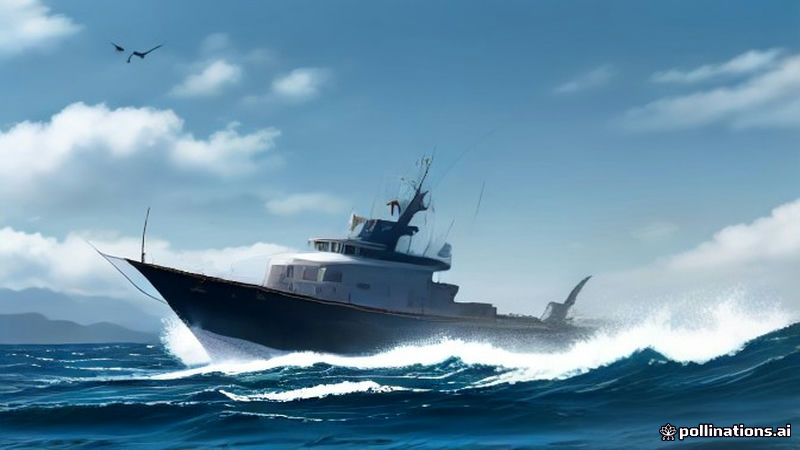

ইয়র্কশায়ার ওয়িটবিতে ধরা দুটি ব্লুফিন টুনা, ছয় দশকে প্রথম উত্তর সাগর থেকে বিক্রয়
Prothom Alo · 2026-11-11
AI-generated illustrationপ্রোথোম আলোর মতে, আগস্টের মাঝামাঝি সময়ে ওয়িটবির উপকূলে ধরা দুটি ব্লুফিন টুনা, ৬০ বছর পর উত্তর সাগর থেকে বাজারে প্রথম বিক্রয়।
প্রোথোম আলোর তথ্য অনুযায়ী, ইংল্যান্ডের ওয়িটবির উপকূলে আগস্টের মাঝামাঝি সময়ে দুটি ব্লুফিন টুনা ধরা পড়ে এবং এক দিনের মধ্যে তৎক্ষণাৎ তোলা হয়।
এই ধরা টুনাগুলো ছয় দশকের পর উত্তর সাগর থেকে বাজারে বিক্রয়ের জন্য প্রথমবার ধরা পড়া হয়েছে, যা দীর্ঘ সময়ের পর একটি বিরল ঘটনার সূচক।
দুটি টুনা পরে বাজারে পৌঁছে, অঞ্চলের সরবরাহে এই মূল্যবান প্রজাতির একটি বিরল সংযোজন ঘটায়।
Read the original reporting at the links above.
English version
Two Bluefin Tuna Caught Off Whitby Mark First North Sea Harvest in Six Decades
According to Prothom Alo, two bluefin tuna were caught off the coast of Whitby in England during the middle of August, and the fish were hauled to shore within a single day of their capture.
The catch marks the first time in six decades that a bluefin tuna has been taken from the North Sea for commercial sale, ending a long period without such a harvest.
The two specimens were subsequently brought to market, providing a rare addition to the regional supply of the prized species.